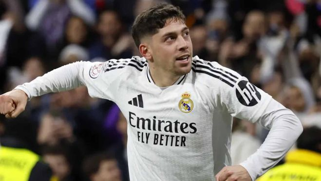
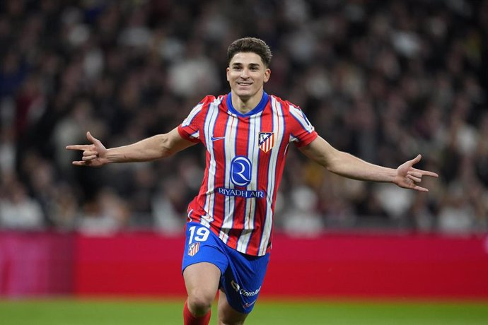

Lamine Yamal
Jove promesa del FC Barcelona, velocitat i desequilibri des del primer minut.

Jove promesa del FC Barcelona, velocitat i desequilibri des del primer minut.
El francès més explosiu, ara a LaLiga per revolucionar l’atac del Real Madrid.

Extrem brasiler del Barça amb potència i xut imparable des de fora de l’àrea.
Motor del mig del camp del Madrid, aportant força, recorregut i gols decisius.
Màgia, visió i control del joc des del mig del camp blaugrana.
Extrem brasiler amb molta tècnica i desequilibri individual.
Extrem ràpid i hàbil de l’Athletic Club, especialista en superar rivals.
Mitjapunta creatiu i amb gol de l’Athletic Club, amb molt futur per davant.
El davanter argentí arriba amb fam de gol i moviment constant dins l’àrea.
Porter àgil i segur, amb reflexos que salven partits en qualsevol moment.